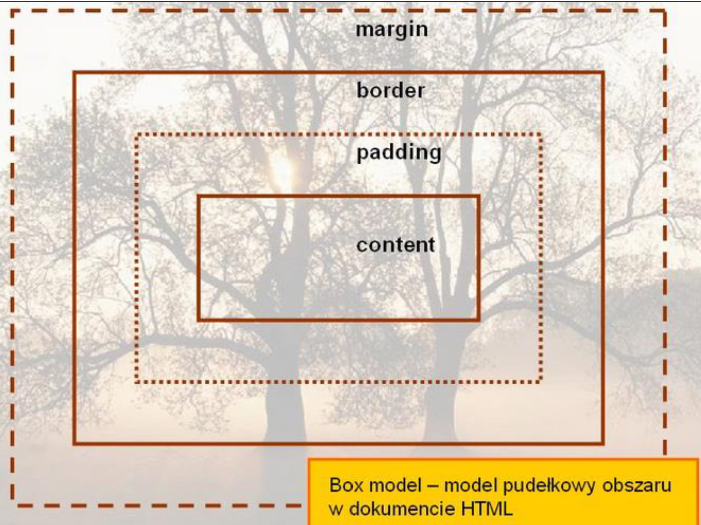

Padding, border i margin mogą mieć zerową wartość.
Tło elementu jest określone dla wszystkich z podanych powyżej obszarów z wyjątkiem marginesów zewnętrznych, które zawsze są przezroczyste (transparent).
(box model) przedstawiony został na schemacie.
Padding określa przestrzeń wokół danego elementu, np:
lub >div>, natomiast margines przestrzeń pomiędzy elementami.
Różnica pomiędzy paddingiem i marginesem Padding określa przestrzeń wokół danego elementu, np:
lub >div>, natomiast margines przestrzeń pomiędzy elementami. Jak widać na rysunku, padding oznaczony jest kolorem niebieskim. Określa on wielkość przestrzeni wokół elementu
. Element ten posiada również margines zaznaczony kolorem pomarańczowym. Jest to odległość od brzegu elementu
.